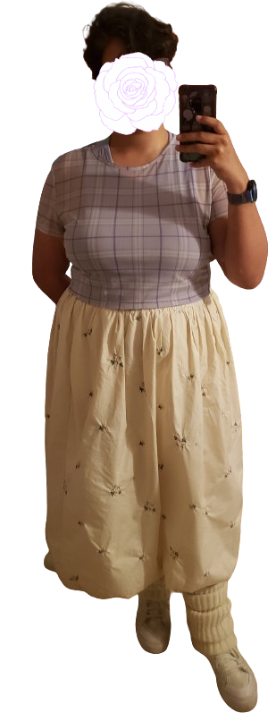
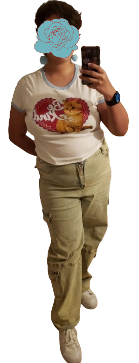
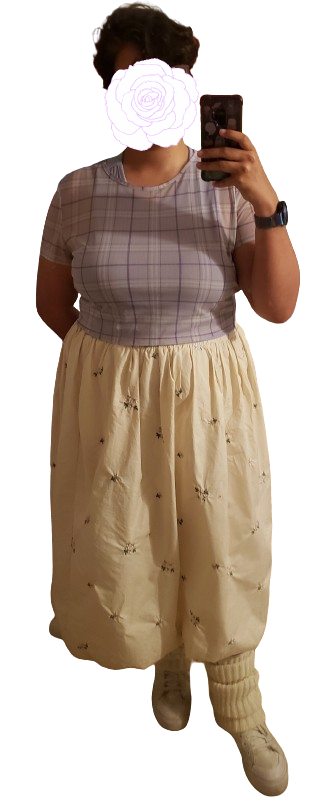
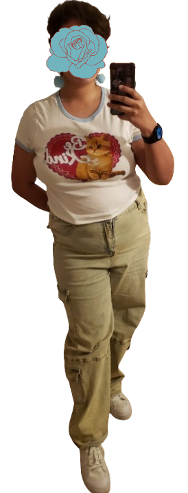
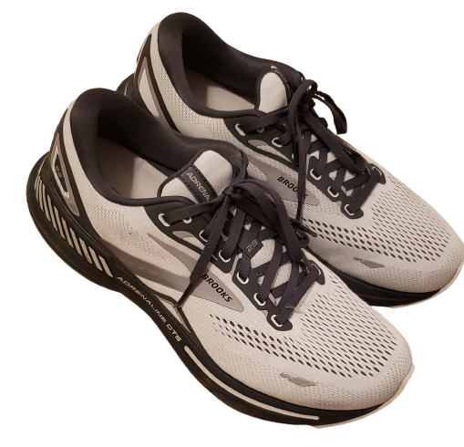
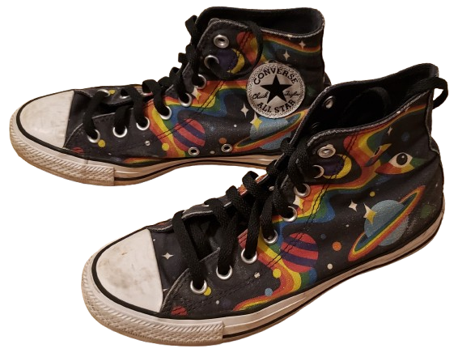
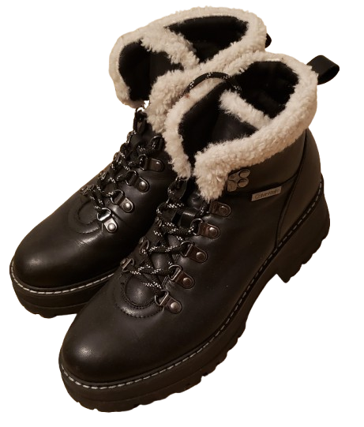
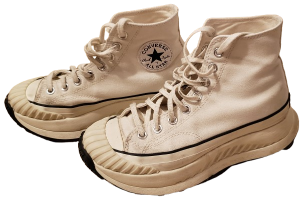
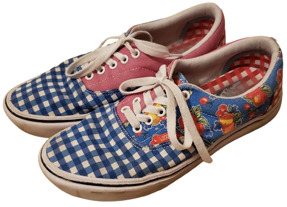
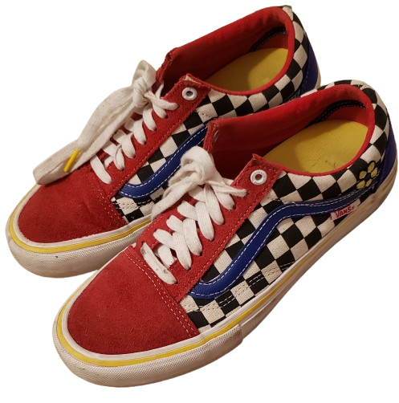

fashion
fashion has been one of my favorite things for expressing myself. as of recently, i've been feeling more comfortable with my body and what i like to wear. i've gotten the chance to wear more and more things that i previously was scared to wear. i love playing around with my looks and my wardrobe, which is probably why i love dress-up games such as the style savvy series, infinity nikki and i'm also obsessed with doing picrews of myself whenever i can. nothing gives me as much joy as being able to unabashedly express myself through clothing. it has been a very fun experience for me to be able to explore what i like to wear!
if you asked me to describe my style... i really don't know what i would tell you! my style varies heavily. i like wearing darker colors as well as lighter ones. while most of my wardrobe is very feminine, i also enjoy dressing up a bit more masculine at times. i guess at the moment i am just exploring things out! it just really depends on my mood the night before :3 which is when i'm picking my outfits out.
outfits


 



my girlfriend called this one 'waitercore'
it was actually inspired by mitsuki from the guy she was interested in wasn't a guy at all when i saw this panel of her:
 and i said "wait... i need to get on her level...."
and i said "wait... i need to get on her level...."
i'd honestly LOVE to dress more like this in the future. i think i look soooo handsome.

accessories
shoes
growing up i used to be really into vans but now i'm more of a converse person.
     